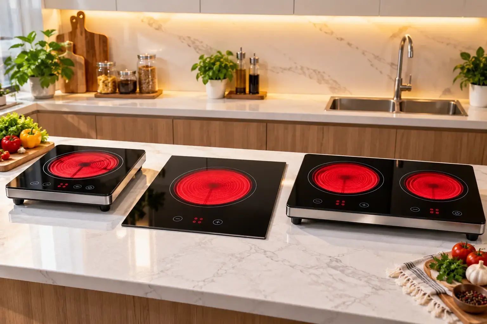
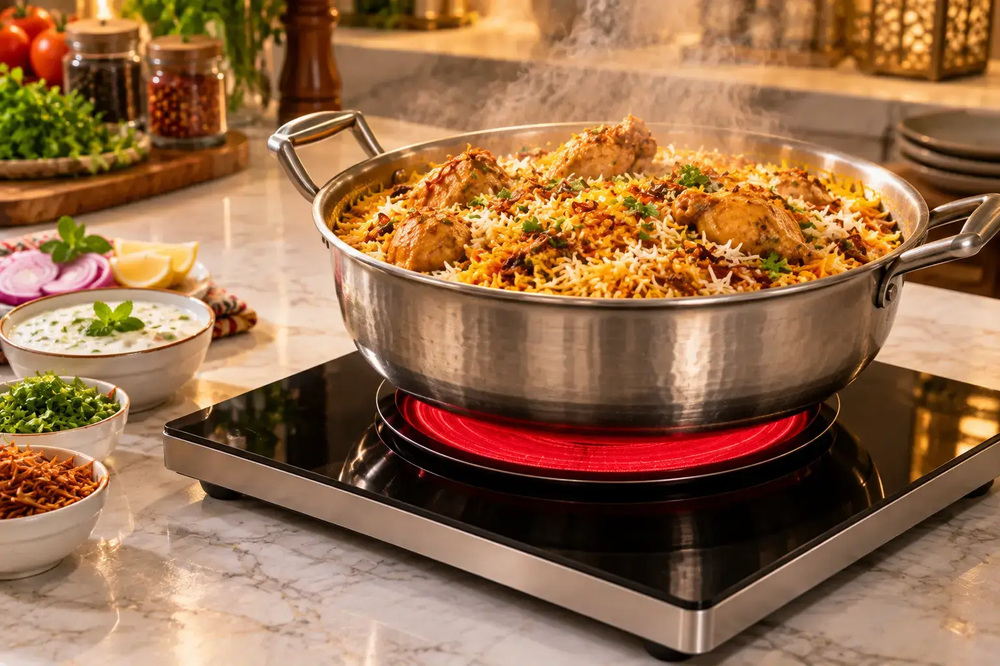

Best Electric Stove in Pakistan 2026: 4 Picks Compared
Quick answer: For most homes the best electric stove in Pakistan is a 2200W infrared ceramic cooker. Best value: Hot Glow-912 (Rs 17,520). Best built-in: Hot Glow-B120 (Rs 19,110). Best for families: Hot Glow-920 dual burner (Rs 40,800). Best commercial: GG-Cook King-12 2700W (Rs 43,200).

Image slot — upload images/best-electric-stove-in-pakistan-hero-1.webp
Image slot — upload images/best-electric-stove-in-pakistan-hero-2.webpComparison table
| Model | Type | Power | Price (PKR) |
|---|---|---|---|
| Hot Glow-912 | Single-burner infrared ceramic cooker (portable) | 2200W | Rs 17,520 |
| Hot Glow-B120 | Single-burner infrared cooker | 2200W | Rs 19,110 |
| Hot Glow-920 | Double-burner infrared ceramic hob | 2200W (dual power mode) | Rs 40,800 |
| GG-Cook King-12 | Heavy-duty commercial electric hot plate | 2700W | Rs 43,200 |
Prices from glamgas.com on 2026-09-28. Sale prices change often — always confirm on the product page before ordering.
How we chose
We compared power output, rated pot load, cooling and safety features, cookware compatibility, installation options, warranty, and price per burner — the things that decide whether a stove can really replace gas in a Pakistani kitchen that cooks roti, salan and rice every day.
1. Best value: Hot Glow-912
Glam Gas Hot Glow-912 Infrared Cooker
 Image slot — upload images/best-hot-glow-912-1.webp
Image slot — upload images/best-hot-glow-912-1.webp Image slot — upload images/best-hot-glow-912-2.webp
Image slot — upload images/best-hot-glow-912-2.webpRs 17,520 Rs 21,900 (glamgas.com, checked 2026-09-28)
Lowest price in the line-up with full 2200W power and an 18–20 kg pot rating. Portable, inverter-friendly, available in several colours.
- Type: Single-burner infrared ceramic cooker (portable)
- Power: 2200W
- Pot load: 18–20 kg
- Electricity: ≈1.5 units/hour (brand figure)
- Best for: Students, hostels, rented flats, small families, inverter backup
- Warranty: 1 year on electrical parts (glass/body damage not covered)
2. Best built-in single burner: Hot Glow-B120
Glam Gas Hot Glow-B120 Infrared Cooker
 Image slot — upload images/best-hot-glow-b120-1.webp
Image slot — upload images/best-hot-glow-b120-1.webp Image slot — upload images/best-hot-glow-b120-2.webp
Image slot — upload images/best-hot-glow-b120-2.webpRs 19,110 Rs 27,300 (glamgas.com, checked 2026-09-28)
Install it into a marble top or use it on the counter. Six-blade cooling fan and automatic overheat protection for long cooking sessions like nihari or haleem.
- Type: Single-burner infrared cooker — built-in or tabletop
- Power: 2200W
- Pot load: 18–20 kg
- Electricity: ≈1.5 units/hour (brand figure)
- Best for: Families who want a marble-top built-in look without a gas line
- Warranty: 1 year on electrical parts (glass/body damage not covered)
3. Best double burner for families: Hot Glow-920
Glam Gas Hot Glow-920 Dual Burner Infrared Cooker
 Image slot — upload images/best-hot-glow-920-1.webp
Image slot — upload images/best-hot-glow-920-1.webp Image slot — upload images/best-hot-glow-920-2.webp
Image slot — upload images/best-hot-glow-920-2.webpRs 40,800 (glamgas.com, checked 2026-09-28)
Two burners with soft-touch controls and a digital timer. Handles 15–18 kg per burner and can be built into the counter — the closest like-for-like replacement for a gas hob.
- Type: Double-burner infrared ceramic hob — built-in or tabletop
- Power: 2200W (dual power mode)
- Pot load: 15–18 kg per burner
- Electricity: ≈1.5 units/hour per burner (brand figure)
- Best for: Full family kitchens cooking two dishes at once
- Warranty: 1 year on electrical parts (glass/body damage not covered)
4. Best commercial electric stove: GG-Cook King-12
Glam Gas GG-Cook King-12 Commercial Electric Hot Plate
 Image slot — upload images/best-gg-cook-king-12-1.webp
Image slot — upload images/best-gg-cook-king-12-1.webp Image slot — upload images/best-gg-cook-king-12-2.webp
Image slot — upload images/best-gg-cook-king-12-2.webpRs 43,200 Rs 48,000 (glamgas.com, checked 2026-09-28)
2700W with digital temperature control and a timer, designed for continuous restaurant use and heavy wok cooking.
- Type: Heavy-duty commercial electric hot plate with digital display & timer
- Power: 2700W
- Pot load: Large woks & heavy pots
- Electricity: Up to 2.7 units/hour at full power
- Best for: Restaurants, dhabas, caterers, heavy wok cooking
- Warranty: 1 year on electrical parts (glass/body damage not covered)
Which one should you buy?
- Student, hostel or rented room: Hot Glow-912 — see portable electric stoves.
- Family of 4–6, one-burner backup: Hot Glow-B120.
- Going fully electric / solar home: Hot Glow-920.
- Restaurant or catering: GG-Cook King-12 — see commercial hot plates.
Frequently Asked Questions
Which is the best electric stove in Pakistan?
For most homes, a 2200W infrared ceramic cooker. The Glam Gas Hot Glow-912 is the best value, the Hot Glow-920 the best double burner, and the GG-Cook King-12 the best commercial option.
Single or double burner — which is better?
A single burner is cheaper and portable; a double burner lets you cook two dishes at once and is better if you are replacing a gas hob entirely.
Which electric stove brand is good in Pakistan?
Look for 2000W+ power, a cooling fan, overheat protection, a clear 1-year warranty and a local service network. Glam Gas is a Karachi-based manufacturer with nationwide delivery.
Is an infrared stove better than induction in Pakistan?
For most Pakistani kitchens, yes, because infrared works with aluminium and ceramic pots while induction needs magnetic cookware.
Can I install an electric stove in a marble counter?
Yes, models like the Hot Glow-B120 and Hot Glow-920 can be built into marble or used tabletop.